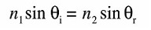

Chemical development of photography began around the early 1800's, the first attempts were very imprecise and nothing was done to preserve what little shades the photosensitive substances did produce. The earlier chemicals used included sivler nitrate, silve chloride, and others.
After decades of development by inventors such as Nicéphore Niépce, and Frederick Scott Archer, the technology for capturing images had evolved enough for everyday people to replicate. Archer was the one to invent the earliest practical process, called the collodion process.
In the collodion process, Archer used (you guessed it) collodion to coat a glass plate. What is collodion? Collodion is simply an assembly of organic compounds that is highly flammable and unstable, but also works well for acting as a catalyst (it speeds up the reaction) for imagining incoming light. When the photographer prepared a slide, he took a glass panel and spread collodion on it. The plate would then be dunked, or otherwise covered with silver nitrate, the compound that is actually photosensitive and will be responsible for capturing the image. Silver nitrate is also somewhat corrosive, and it reacts explosively with ethanol.
It is very important at this stage to keep the plate away from light, as it will pick up the light and will ruin the slide. When the time came to take a picture, the plate was carefully loaded into the camera, and the plate is exposed for a short amount of time capturing the image.
The plate was then developed in a solution of pyrogallic acid to produce a positive image. Completing the image, the photography generally covered the whole plate with a layer of varnish to give it a shiny and clean look.
Many cameras use lenses to focus on the subject of their picture. One can explain how the light is refracted by the lenses using Snell's Law, as shown below:
This equation describes the relationship between the angle of light entering the medium that is the lense, and the anlge of the light in that lense. Diffraction of light simply changes the angle of the light, and you can see this whenever you put a straw into a glass of water.
On the left side, θ would represent the angle of the light with respect to the surface of the lense entering the lense, and n would be the refractive index of the air. (The refractive index is the value c/v where c is the speed of light and v is the speed of light in whatever medium we are talking about.
A simple application of this equation would be knowing the refractive index of the glass lense(n1), and the angle entering the lense(θ), but we wouldn't know what angle it would diffract to. In this situation we could divide both sides by n2 (which is approximately equal to one because there isn't much difference between the speed of light in a vacuum and the speed of light in air), and just get (n1 sin(θ1))/n2 = sin(θ2)